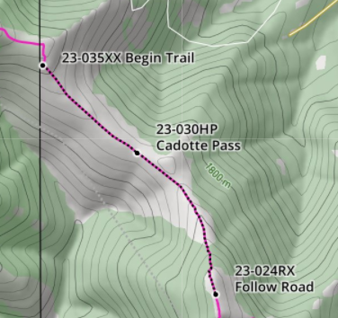

Cycle the Continental Divide
| Dates: | July 28th-July 30th |
|---|---|
| Registration Cost: | $200 |
| Registration Deadline: | June 30th |
DISCLAIMER: Applicants must have completed at least one 5k race in the past year to apply. The trail is for advanced riders only. The route is marked with a black dotted line on the map below. Please review before registering.
